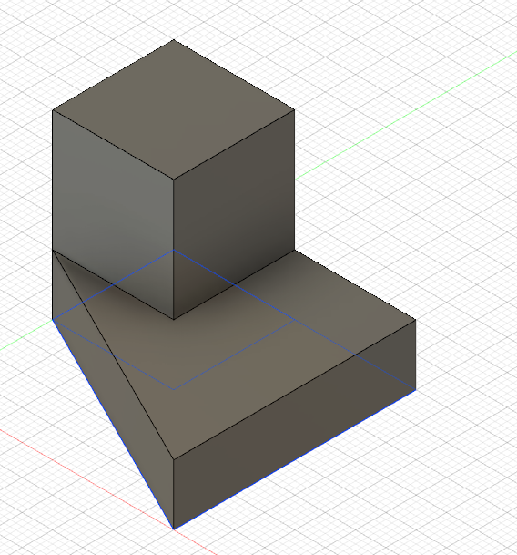
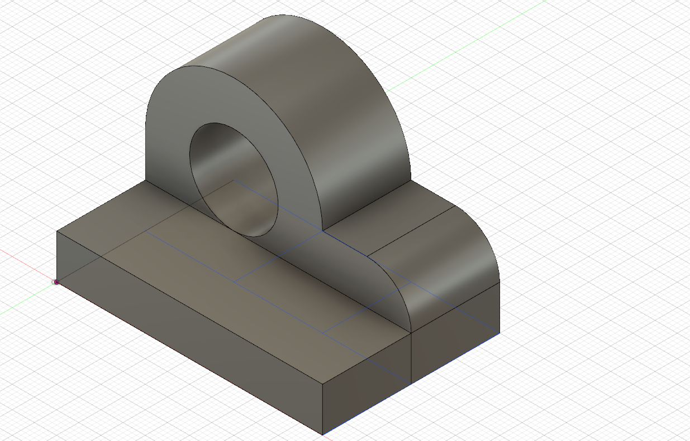
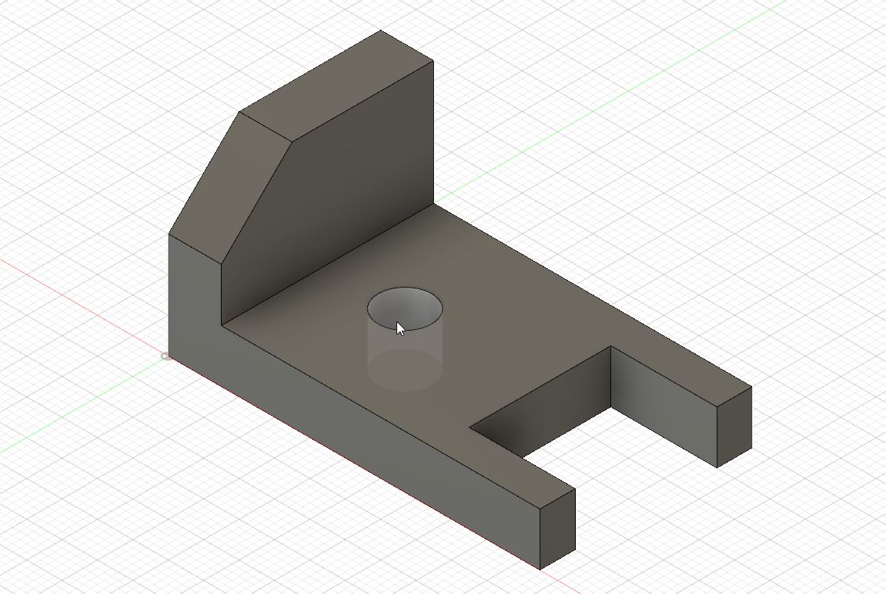
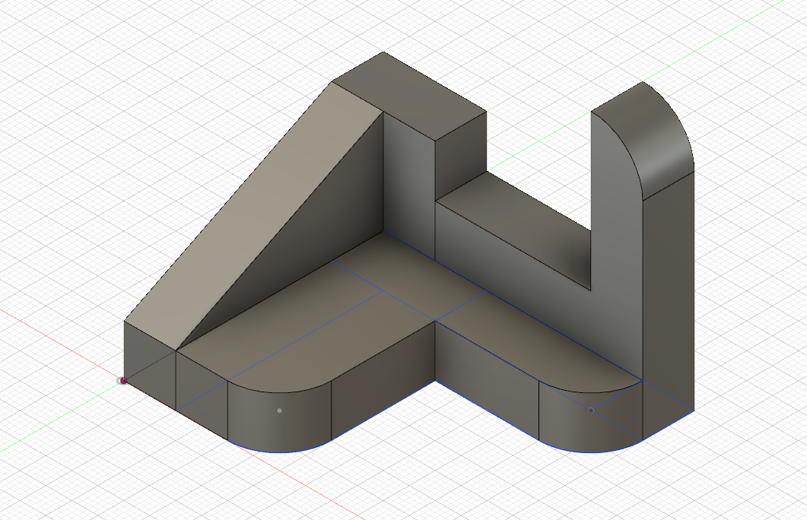
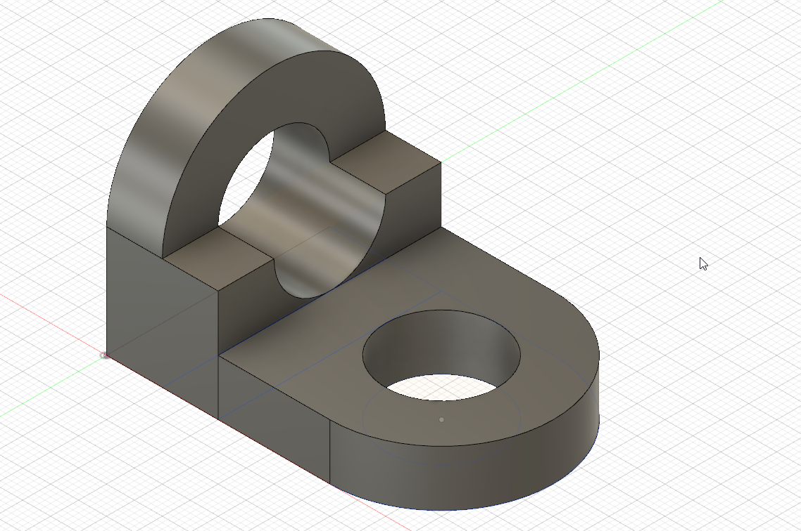
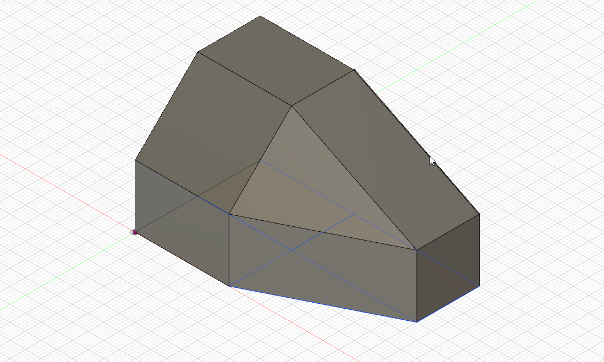
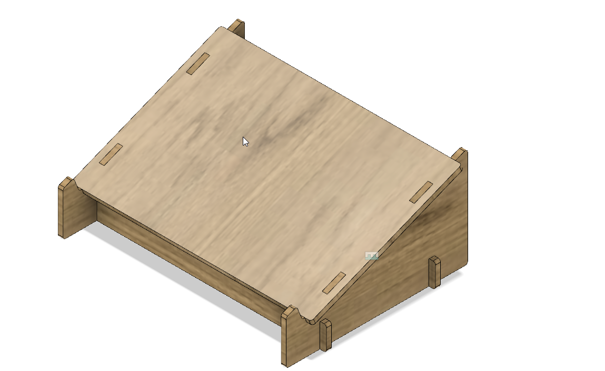
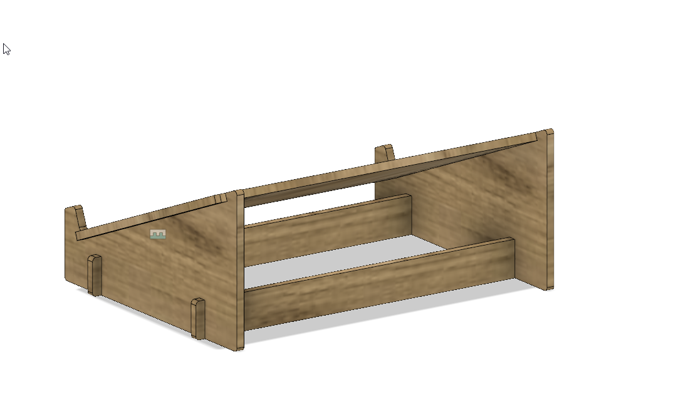

In this assignment, we had to recreate 6 sketches from here using Fusion 360. The screenshots of the 6 sketches are shown below. To create the sketches, I first sketched out only the top-down plan of the object before pulling it out. This simplified the process of creating the objects and allowed me to work faster.
     In this assignment, I followed a tutorial to make a laser cut laptop stand in Fusion 360. To do this, I created 5 seperate parts - 2 legs, supports and then top and used joints to connect them together. The idea was that I would have the 2 legs holding up a rectangular plate for the laptop and have 2 horizontal support bars running underneath to prop up the legs and hold the entire stand in place. Screenshots of the stand as well as the original file are linked below.
 